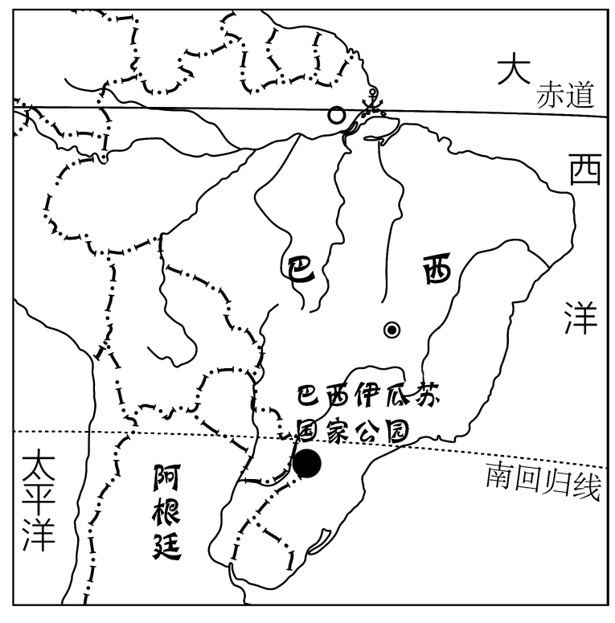
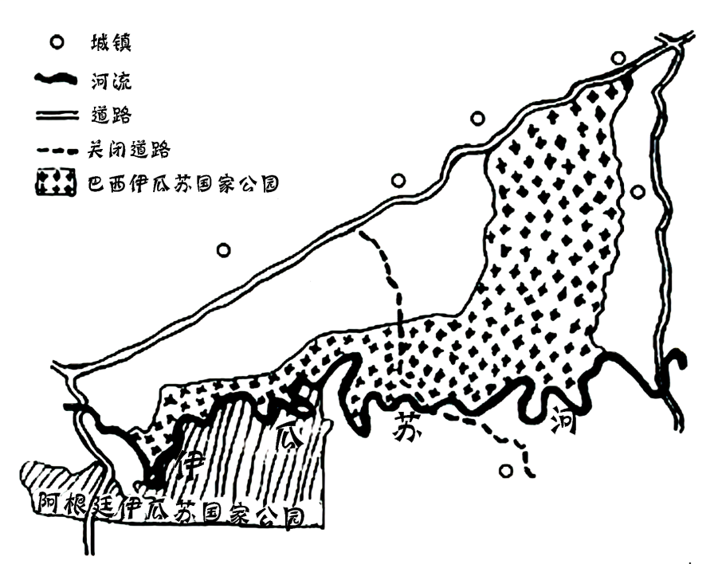

2023年北京中考地理 第19题 解析
19. 两工程的主要作用是（ ）
A. 防风固沙B. 调节气候C. 灌溉农田D. 蓄水发电
【答案】17. A 18. D 19. C
【解析】
【17题详解】
读图可知，法拉吉位于阿拉伯半岛，属于热带沙漠气候，都江堰位于四川，属于亚热带季风气候，故选A。
【18题详解】
都江堰位于四川，属于亚热带季风气候，夏季高温多雨，A错误。都江堰目的不是为了减少蒸发，B错误。法拉吉终年高温干旱，不是因降水季节不均而蓄水，C错误。两个工程都是通过调配水资源提高利用效率，D正确。故选D。
【19题详解】
法拉吉将山泉水和地下水通过水渠引到山麓地带的村庄，用于生产生活。都江堰通过渠、堰调节岷江水，引水保障成都平原的农业生产。故两工程的主要作用是灌溉农田，C正确。跟防风固沙、 调节气候 、 蓄水发电无关，ABD错误，故选C。
【点睛】都江堰是当今世界年代久远、唯一留存、以无坝引水为特征的宏大水利工程。它充分利用当地西北高、东南低的地理条件，根据江河出山口处特殊的地形、水脉、水势，乘势利导，无坝引水，自流灌溉，使堤防、分水、泄洪、排沙、控流相互依存，共为体系，保证了防洪、灌溉、水运和社会用水综合效益的充分发挥。它最伟大之处是建堰2250多年来经久不衰，而且发挥着愈来愈大的效益。
巴西伊瓜苏国家公园和阿根廷伊瓜苏国家公园内动植物种类丰富，分别被列入《世界遗产名录》。因当地居民启用原本关闭的道路，1999年巴西伊瓜苏国家公园面临从名录中被删除的危险，2001年该道路重新关闭。图为巴西伊瓜苏国家公园手绘图。读图，完成下面小题。

